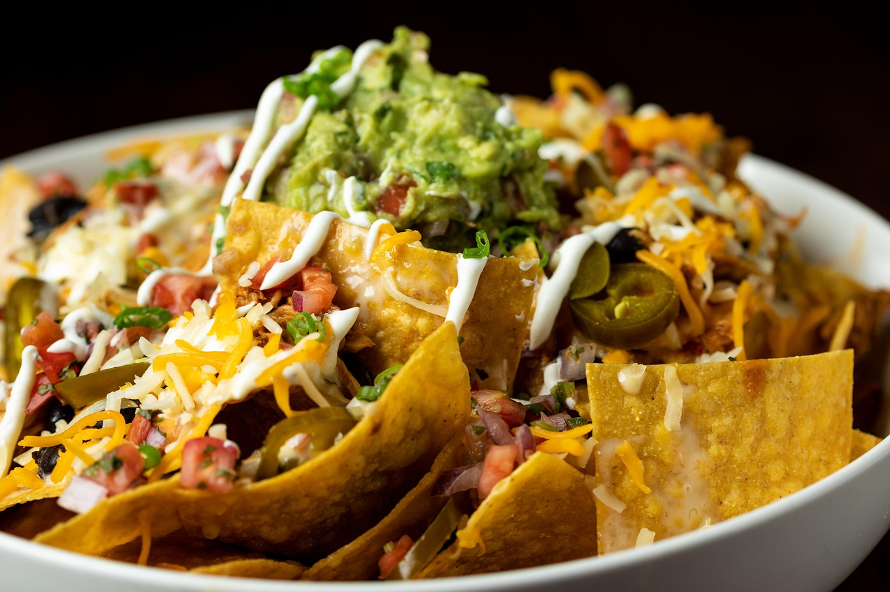

Home
Nacho Casserole

Description
Ingredients
- 1 pound ground beef
- 1 large white onion (minced)
- 2 large tomatoes (diced)
- 1 (8 ounce) bag of tortilla chips
- 2 cloves of garlic
- 2 limes
- 1 cup of sour cream
- 2 cups of cheese (any melting cheese)
- 2 sprigs of cilantro
- 1 chopped jalapeno pepper (optional)
- salt and pepper to taste
Steps